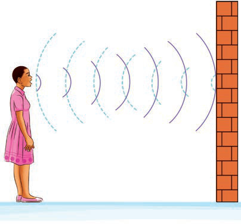

Activity 7
Demonstrating an echo
- 1. Enter an empty hall and stand at least 17m from one of the walls as shown in Figure 14.
- 2. Shout loudly. What do you hear/sense?
- 3. Write the results of the action you performed.
Figure 14: Demonstrating an echo formation

When you stand in an empty hall and shout loudly, you hear your sound repeating. For example, if you say ‘hello’, after a few seconds, you hear ‘hello’ again. This repeated sound is called an echo. What happens is that sound waves travel from your mouth through the air and hit a hard surface like a wall, and bounce back, causing you to hear the sound you initially made. Sound is reflected when it hits a barrier or a hard surface like a wall or rock.